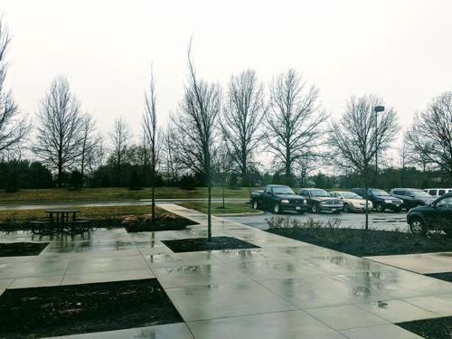
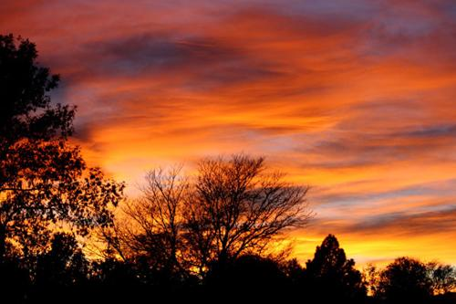

Sometimes, the two-minute walk in the parking lot from my car to the entrance of my work is my favorite part of the day. I know, what a boring life, right? Just hear me out…
It all comes down to perspective. You see, I could rush over the blacktop tar pits, weaving between parked cars and dodging pot holes just to get inside as quickly as possible like most people do. Especially on dark, drizzly mornings like today. But if we look at these brief interludes throughout our day as an opportunity rather than a mere inconvenience bridging from one "productive" moment to the next, we would see that these moments can be precious — and practical.

While I work in an area completely surrounded by gargantuan warehouses — massive concrete land sloths of a prehistoric era — there are still areas where Nature has peaked her head through, where She squeezes between the cracks shining Her light, hoping someone might remember Her. Between the acres of paved roads and parking lots where semi-trucks gloomily trudge lies ponds for rainwater runoff. The boundaries between the warehouses are marked by old trees; their lives spared for mere demarcation purposes.
But these accidental ponds and tree lines are what make my brief morning walk totally worth it. They are island sanctuaries giving local wildlife a place to live, a place to help us remember what used to be. Not only are they some of the last remaining places for local flora and fauna to survive, they also offer humans like myself moments of appreciation for what the World is; what life on this earth truly represents. They provide a breath of fresh air in an exhaust-laden atmosphere.

Something in me stirs when I feel the breeze on my face as I walk. This morning, it rains. Instead of an annoyance I try to shield myself from, I welcome the light drizzle in my hair and on my arms. I leave the umbrella at home so I can get the same awakening benefits from the rain as a morning coffee would provide. The dark grey overcast has a cozy feeling, like your favorite comforter back home.
But some mornings I look up and see a dazzling sunrise. The radiant reds and oranges reflecting off the clouds are a perfect contrast to the sapphire blue of the sky above. There are few things more inspiring than an optimistic sunrise to start your day. And depending on the time of year, the sun hasn't risen yet and the sky is still black. These are my favorite mornings. They give me a chance to see the vast expanse above. I look up and peer into infinity, reviving that sense of awe and wonder. The pure diamond pinpricks scattered across the inky blackness remind me that there's so much more to this life than clocking in and out every day… and it's important to keep these things that make life worth it in perspective.
I slow my pace a bit as I approach the tree line near the entrance. This is where the music emanates from. To most people it's just some old-growth trees near a low point in a small field where rain regularly collects and pools… and they're not wrong. But if you listen, you can hear an orchestra of frogs croaking their symphonies. If you pay attention you can decipher the plethora of insects buzzing and chirping, making their presence known. And the birds are not ones to be left out. They sing their songs and call out to their mates, swooping and dodging between the branches almost bragging about their elegance and song.
I treasure these moments because I think we can all agree that our lives are filled with just a bit too much technology and a few too many deadlines. Nature is perennial and She'll be here long after our deadlines have come and gone and our technology has rusted away. Whether you grew up in a concrete-canyon city, or your childhood memories are of a farm or actual tree-covered mountains, there is an innate human connection with the natural world. It's where we're from, and we cannot deny it.
These brief moments may be few and far between in today's bustling society, but I know for me personally, it's important to remember where our species came from — it really puts things into perspective. And it's a healthy reminder that no matter how much you mow the grass and trim the edges, one day you'll be back to where you started. Just remember: the destination isn't the point, it's the journey. And tiny, seemingly mundane moments like walking through a parking lot are just as real and just as much a part of the journey as getting that promotion or finally taking that vacation. Embrace them.
A bird does not sing because it has an answer, it sings because it has a song.